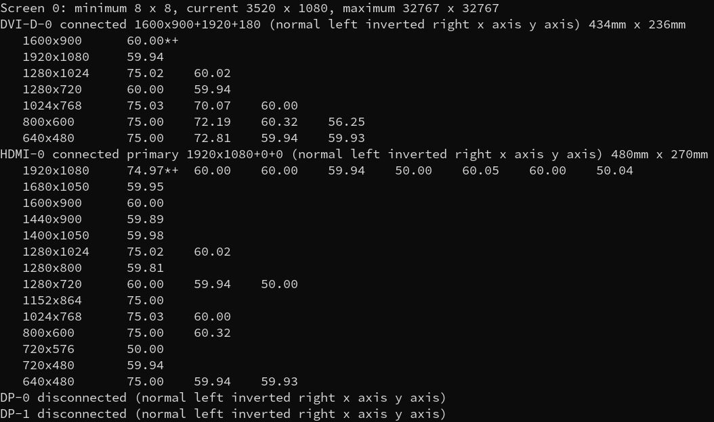
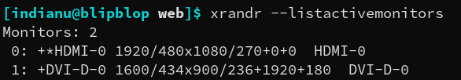
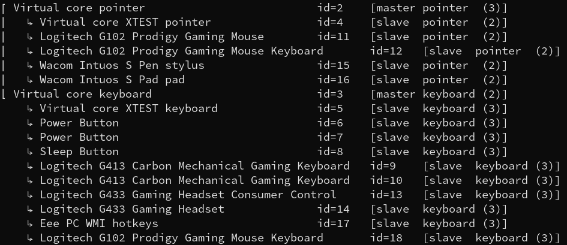

in-the-loop
Map a Wacom tablet to a single monitor on linux
By default, a Wacom graphics tablet that runs on Linux is mapped on the all the monitors plugged in that computer.
First, for mapping the tablet to a single display, you need to find the name of that monitor
"xrandr" - a primitive command line interface to the RandR extension is useful finding the displays' name
This is the output that I get when running "xrandr":
In this picture, the monitors' names that are plugged to my computer are: "DVI-D-0" and "HDMI-0".
In this example, I am going to map my tablet to "HDMI-0"
Also, you can use the "--listactivemonitors" on "xrandr" to get a prettier output:
Next step is finding the device id of the graphics tablet
For this, you can either use "xinput" or xsetwacom"
For "xinput" just type it's name in your terminal for seeing the devices' ids
For "xsetwacom", type "xsetwacom" with the "list devices" "argument" ("xsetwacom list devices")

Important: In both cases, you need to get the id of the pen (stylus), not the graphics tablet
The final step is mapping the monitor
For this, as you did in the last step, you can use "xinput" or "xsetwacom"
For "xinput", the command that maps the tablet is "xinput map-to-output {the id of the pen} {the monitor name}
In my case, the command is: "xinput map-to-output 15 HDMI-0"
For "xsetwacom", the command is: "xsetwacom set {pen id} MapToOutput {monitor name}"
In my case, the command is: "xsetwacom set 15 MapToOutput HDMI-0"
Following this steps, your Wacom graphics tablet should be mapped on a single monitor. Place the last command in your ".bashrc" file if you want to always have the tablet mapped to that monitor.
For more informations I suggest that you read the Arch wiki page about Wacom tablets:
https://wiki.archlinux.org/title/Wacom_tablet